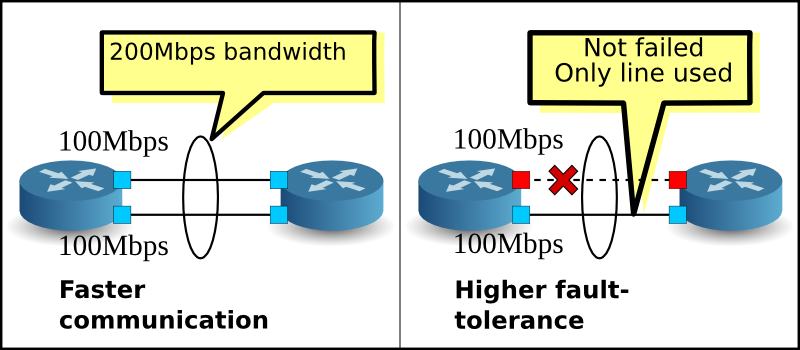
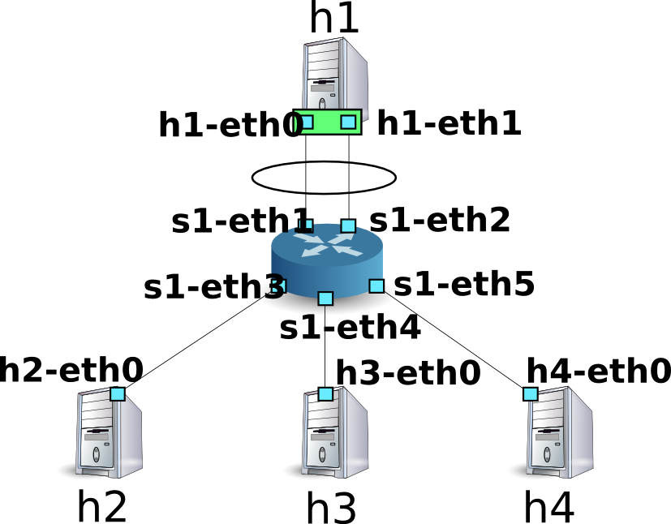

이 장에서는 Ryu를 이용한 링크 어그리게이션 기능을 구현하는 방법을 설명하여 마련했습니다.
링크 어그리게이션은 IEEE802.1AX-2008에서 규정 된 여러 물리적 회선을 묶어 하나의 논리적 링크로 처리 기술입니다. 링크 통합 기능은 특정 네트워크 장치 간의 통신 속도를 향상시킬 수 있으며 동시 에 중복성을 확보함으로써 감수성을 향상시킬 수 있습니다.
링크 통합 기능을 사용하려면 각 네트워크 장비에서 어떤 인터페이스를 어떤 그룹으로 묶을 것인가하는 설정을 미리 해두 해야합니다.
링크 통합 기능을 시작하는 방법에는 각각의 네트워크 장비에 대해 직접 지시 할 정적 방법과 LACP (Link Aggregation Control Protocol)라는 프로토콜을 사용하여 으로 시작하는 역동적 인 방법이 있습니다.
역동적 인 방법을 채용 한 경우 각 네트워크 장비는 대향 인터페이스 동 선비에서 LACP 데이터 유닛을 정기적으로 교환하여 소통 불가능하지 것을 서로 확인하고 계속합니다. LACP 데이터 유닛 교환 단절 고장이 발생한 것으로 간주하고 해당 네트워크 장비는 사용 불가능 패킷 전송 수신은 나머지 인터페이스에 의해서만 이루어지게됩니다. 이 방법은 네트워크 장비간에 미디어 컨버터 등의 중계 장치가 존재하는 경우에도 중계 장치의 반대편 링크 다운을 감지 할 수 있다는 장점이 있습니다. 이 장에서는 LACP를 이용한 동적 링크 통합 기능을 처리 또는 입니다.
소스의 설명은 차후에 하고, 우선 Ryu의 링크 애그리 게이션 응용 프로그램을 실행 해 봅니다.
Ryu 소스 트리에 포함되어있는 simple_switch_lacp.py는 OpenFlow 1.0 전용 응용 프로그램이기 때문에 여기에서는 새롭게 OpenFlow 1.3에 대응 한 simple_switch_lacp_13.py을 만듭니다. 이 프로그램은 「 스위칭 허브 」스위칭 허브 링크 어 그리 게이션 기능을 추가 한 응용 프로그램입니다.
소스 이름： simple_switch_lacp_13.py
from ryu.base import app_manager
from ryu.controller import ofp_event
from ryu.controller.handler import CONFIG_DISPATCHER
from ryu.controller.handler import MAIN_DISPATCHER
from ryu.controller.handler import set_ev_cls
from ryu.ofproto import ofproto_v1_3
from ryu.lib import lacplib
from ryu.lib.dpid import str_to_dpid
from ryu.lib.packet import packet
from ryu.lib.packet import ethernet
class SimpleSwitchLacp13(app_manager.RyuApp):
OFP_VERSIONS = [ofproto_v1_3.OFP_VERSION]
_CONTEXTS = {'lacplib': lacplib.LacpLib}
def __init__(self, *args, **kwargs):
super(SimpleSwitchLacp13, self).__init__(*args, **kwargs)
self.mac_to_port = {}
self._lacp = kwargs['lacplib']
self._lacp.add(
dpid=str_to_dpid('0000000000000001'), ports=[1, 2])
@set_ev_cls(ofp_event.EventOFPSwitchFeatures, CONFIG_DISPATCHER)
def switch_features_handler(self, ev):
datapath = ev.msg.datapath
ofproto = datapath.ofproto
parser = datapath.ofproto_parser
# install table-miss flow entry
#
# We specify NO BUFFER to max_len of the output action due to
# OVS bug. At this moment, if we specify a lesser number, e.g.,
# 128, OVS will send Packet-In with invalid buffer_id and
# truncated packet data. In that case, we cannot output packets
# correctly.
match = parser.OFPMatch()
actions = [parser.OFPActionOutput(ofproto.OFPP_CONTROLLER,
ofproto.OFPCML_NO_BUFFER)]
self.add_flow(datapath, 0, match, actions)
def add_flow(self, datapath, priority, match, actions):
ofproto = datapath.ofproto
parser = datapath.ofproto_parser
inst = [parser.OFPInstructionActions(ofproto.OFPIT_APPLY_ACTIONS,
actions)]
mod = parser.OFPFlowMod(datapath=datapath, priority=priority,
match=match, instructions=inst)
datapath.send_msg(mod)
def del_flow(self, datapath, match):
ofproto = datapath.ofproto
parser = datapath.ofproto_parser
mod = parser.OFPFlowMod(datapath=datapath,
command=ofproto.OFPFC_DELETE,
out_port=ofproto.OFPP_ANY,
out_group=ofproto.OFPG_ANY,
match=match)
datapath.send_msg(mod)
@set_ev_cls(lacplib.EventPacketIn, MAIN_DISPATCHER)
def _packet_in_handler(self, ev):
msg = ev.msg
datapath = msg.datapath
ofproto = datapath.ofproto
parser = datapath.ofproto_parser
in_port = msg.match['in_port']
pkt = packet.Packet(msg.data)
eth = pkt.get_protocols(ethernet.ethernet)[0]
dst = eth.dst
src = eth.src
dpid = datapath.id
self.mac_to_port.setdefault(dpid, {})
self.logger.info("packet in %s %s %s %s", dpid, src, dst, in_port)
# learn a mac address to avoid FLOOD next time.
self.mac_to_port[dpid][src] = in_port
if dst in self.mac_to_port[dpid]:
out_port = self.mac_to_port[dpid][dst]
else:
out_port = ofproto.OFPP_FLOOD
actions = [parser.OFPActionOutput(out_port)]
# install a flow to avoid packet_in next time
if out_port != ofproto.OFPP_FLOOD:
match = parser.OFPMatch(in_port=in_port, eth_dst=dst)
self.add_flow(datapath, 1, match, actions)
data = None
if msg.buffer_id == ofproto.OFP_NO_BUFFER:
data = msg.data
out = parser.OFPPacketOut(datapath=datapath, buffer_id=msg.buffer_id,
in_port=in_port, actions=actions, data=data)
datapath.send_msg(out)
@set_ev_cls(lacplib.EventSlaveStateChanged, MAIN_DISPATCHER)
def _slave_state_changed_handler(self, ev):
datapath = ev.datapath
dpid = datapath.id
port_no = ev.port
enabled = ev.enabled
self.logger.info("slave state changed port: %d enabled: %s",
port_no, enabled)
if dpid in self.mac_to_port:
for mac in self.mac_to_port[dpid]:
match = datapath.ofproto_parser.OFPMatch(eth_dst=mac)
self.del_flow(datapath, match)
del self.mac_to_port[dpid]
self.mac_to_port.setdefault(dpid, {})
OpenFlow 스위치 및 Linux 호스트 사이에서 링크 통합을 구성하여 봅시다.
VM 이미지 사용을위한 환경 설정 및 로그인 방법 등은 「 스위칭 허브 」 을 참조하십시오.
먼저 Mininet를 이용하여 아래 그림과 같은 토폴로지를 만듭니다.
Mininet API를 호출하는 스크립트를 작성하고 필요한 토폴로지를 구축 합니다.
소스 이름： link_aggregation.py
#!/usr/bin/env python
from mininet.cli import CLI
from mininet.link import Link
from mininet.net import Mininet
from mininet.node import RemoteController
from mininet.term import makeTerm
if '__main__' == __name__:
net = Mininet(controller=RemoteController)
c0 = net.addController('c0')
s1 = net.addSwitch('s1')
h1 = net.addHost('h1')
h2 = net.addHost('h2', mac='00:00:00:00:00:22')
h3 = net.addHost('h3', mac='00:00:00:00:00:23')
h4 = net.addHost('h4', mac='00:00:00:00:00:24')
Link(s1, h1)
Link(s1, h1)
Link(s1, h2)
Link(s1, h3)
Link(s1, h4)
net.build()
c0.start()
s1.start([c0])
net.terms.append(makeTerm(c0))
net.terms.append(makeTerm(s1))
net.terms.append(makeTerm(h1))
net.terms.append(makeTerm(h2))
net.terms.append(makeTerm(h3))
net.terms.append(makeTerm(h4))
CLI(net)
net.stop()
이 스크립트를 실행하여 호스트 h1과 스위치 s1 사이에 2 개의 링크가 존재하는 토폴로지가됩니다. net 명령으로 생성 된 토폴로지를 확인해야 할 수 있습니다.
ryu@ryu-vm:~$ sudo ./link_aggregation.py
Unable to contact the remote controller at 127.0.0.1:6633
mininet> net
c0
s1 lo: s1-eth1:h1-eth0 s1-eth2:h1-eth1 s1-eth3:h2-eth0 s1-eth4:h3-eth0 s1-eth5:h4-eth0
h1 h1-eth0:s1-eth1 h1-eth1:s1-eth2
h2 h2-eth0:s1-eth3
h3 h3-eth0:s1-eth4
h4 h4-eth0:s1-eth5
mininet>
호스트 h1의 Linux에 필요한 사전 설정을 실시합시다. 절 에서 명령 입력 호스트 h1의 xterm에서 실시해주세요.
먼저 링크 통합을위한 드라이버 모듈을로드합니다. Linux에서는 링크 통합 기능을 결합 드라이버가 담당하고 있습니다. 미리 드라이버의 설정 파일을 /etc/modprobe.d/bonding.conf로 작성 해 수 있습니다.
파일 이름: /etc/modprobe.d/bonding.conf
alias bond0 bonding
options bonding mode=4
Node: h1:
root@ryu-vm:~# modprobe bonding
mode = 4는 LACP를 이용한 동적 링크 통합 할 것을 나타냄 입니다. 기본값이기 때문에 여기에서 설정을 선택하고 있습니다 만, LACP 데이터 유닛 교환주기는 SLOW (30 초 간격) 배분 논리는 목적지 MAC 주소를 기반으로 할거야 게 설정되어 있습니다.
이어 bond0이라는 논리 인터페이스를 새로 만듭니다. 또한 bond0 MAC 주소로 적당한 값을 설정합니다.
Node: h1:
root@ryu-vm:~# ip link add bond0 type bond
root@ryu-vm:~# ip link set bond0 address 02:01:02:03:04:08
만든 논리 인터페이스의 그룹에 h1-eth0와 h1-eth1의 물리적 인터 페이스를 참여시킵니다. 이 때, 물리적 인터페이스를 다운시켜 둘 필요 수 있습니다. 또한 무작위로 결정되는 물리적 인터페이스의 MAC 주소를 알기 쉬운 값으로 갱신해야합니다.
Node: h1:
root@ryu-vm:~# ip link set h1-eth0 down
root@ryu-vm:~# ip link set h1-eth0 address 00:00:00:00:00:11
root@ryu-vm:~# ip link set h1-eth0 master bond0
root@ryu-vm:~# ip link set h1-eth1 down
root@ryu-vm:~# ip link set h1-eth1 address 00:00:00:00:00:12
root@ryu-vm:~# ip link set h1-eth1 master bond0
논리 인터페이스에 IP 주소를 할당합니다. 여기에 10.0.0.1를 할당합니다. 또한 h1-eth0에 IP 주소 이 할당되어 있으므로 이를 제거합니다.
Node: h1:
root@ryu-vm:~# ip addr add 10.0.0.1/8 dev bond0
root@ryu-vm:~# ip addr del 10.0.0.1/8 dev h1-eth0
마지막으로, 논리적 인터페이스를 향상시킵니다.
Node: h1:
root@ryu-vm:~# ip link set bond0 up
여기에서 각 인터페이스의 상태를 확인해야합니다.
Node: h1:
root@ryu-vm:~# ifconfig
bond0 Link encap:Ethernet HWaddr 02:01:02:03:04:08
inet addr:10.0.0.1 Bcast:0.0.0.0 Mask:255.0.0.0
UP BROADCAST RUNNING MASTER MULTICAST MTU:1500 Metric:1
RX packets:0 errors:0 dropped:0 overruns:0 frame:0
TX packets:10 errors:0 dropped:0 overruns:0 carrier:0
collisions:0 txqueuelen:0
RX bytes:0 (0.0 B) TX bytes:1240 (1.2 KB)
h1-eth0 Link encap:Ethernet HWaddr 02:01:02:03:04:08
UP BROADCAST RUNNING SLAVE MULTICAST MTU:1500 Metric:1
RX packets:0 errors:0 dropped:0 overruns:0 frame:0
TX packets:5 errors:0 dropped:0 overruns:0 carrier:0
collisions:0 txqueuelen:1000
RX bytes:0 (0.0 B) TX bytes:620 (620.0 B)
h1-eth1 Link encap:Ethernet HWaddr 02:01:02:03:04:08
UP BROADCAST RUNNING SLAVE MULTICAST MTU:1500 Metric:1
RX packets:0 errors:0 dropped:0 overruns:0 frame:0
TX packets:5 errors:0 dropped:0 overruns:0 carrier:0
collisions:0 txqueuelen:1000
RX bytes:0 (0.0 B) TX bytes:620 (620.0 B)
lo Link encap:Local Loopback
inet addr:127.0.0.1 Mask:255.0.0.0
UP LOOPBACK RUNNING MTU:16436 Metric:1
RX packets:0 errors:0 dropped:0 overruns:0 frame:0
TX packets:0 errors:0 dropped:0 overruns:0 carrier:0
collisions:0 txqueuelen:0
RX bytes:0 (0.0 B) TX bytes:0 (0.0 B)
논리적 인터페이스 bond0가 MASTER 물리 인터페이스 h1-eth0와 h1-eth1이 SLAVE되어있는 것을 알 수 있습니다. 또한 bond0, h1-eth0, h1-eth1의 MAC 주소 스가 모두 동일하게되어있는 것을 알 수 있습니다.
본딩 드라이버의 상태도 확인해야합니다.
Node: h1:
root@ryu-vm:~# cat /proc/net/bonding/bond0
Ethernet Channel Bonding Driver: v3.7.1 (April 27, 2011)
Bonding Mode: IEEE 802.3ad Dynamic link aggregation
Transmit Hash Policy: layer2 (0)
MII Status: up
MII Polling Interval (ms): 100
Up Delay (ms): 0
Down Delay (ms): 0
802.3ad info
LACP rate: slow
Min links: 0
Aggregator selection policy (ad_select): stable
Active Aggregator Info:
Aggregator ID: 1
Number of ports: 1
Actor Key: 33
Partner Key: 1
Partner Mac Address: 00:00:00:00:00:00
Slave Interface: h1-eth0
MII Status: up
Speed: 10000 Mbps
Duplex: full
Link Failure Count: 0
Permanent HW addr: 00:00:00:00:00:11
Aggregator ID: 1
Slave queue ID: 0
Slave Interface: h1-eth1
MII Status: up
Speed: 10000 Mbps
Duplex: full
Link Failure Count: 0
Permanent HW addr: 00:00:00:00:00:12
Aggregator ID: 2
Slave queue ID: 0
LACP 데이터 유닛의 교환주기 (LACP rate : slow)와 배분 로직 설정 (Transmit Hash Policy : layer2 (0))를 확인할 수 있습니다. 또한 물리적 인터 페이스 h1-eth0와 h1-eth1의 MAC 주소를 확인할 수 있습니다.
이상으로 호스트 h1의 사전 설정이 완료됩니다.
스위치 s1의 OpenFlow의 버전을 1.3으로 설정합니다. 이 명령 입력 스위치 s1의 xterm에서 실시 하십시오.
Node: s1:
root@ryu-vm:~# ovs-vsctl set Bridge s1 protocols=OpenFlow13
준비가 그래서 처음에 만든 Ryu 응용 프로그램을 실행합니다.
윈도우 제목이 「Node: c0 (root)」이다 xterm에서 다음 명령 을 실행합니다.
Node: c0:
ryu@ryu-vm:~$ ryu-manager ./simple_switch_lacp_13.py
loading app ./simple_switch_lacp_13.py
loading app ryu.controller.ofp_handler
creating context lacplib
instantiating app ./simple_switch_lacp_13.py
instantiating app ryu.controller.ofp_handler
...
호스트 h1은 30 초에 한 번 LACP 데이터 단위를 전송합니다. 시작에서 시바 낙서하면 스위치는 호스트 h1에서 LACP 데이터 단위를 수신하여 작동 로그에 출력합니다.
Node: c0:
...
[LACP][INFO] SW=0000000000000001 PORT=1 LACP received.
[LACP][INFO] SW=0000000000000001 PORT=1 the slave i/f has just been up.
[LACP][INFO] SW=0000000000000001 PORT=1 the timeout time has changed.
[LACP][INFO] SW=0000000000000001 PORT=1 LACP sent.
slave state changed port: 1 enabled: True
[LACP][INFO] SW=0000000000000001 PORT=2 LACP received.
[LACP][INFO] SW=0000000000000001 PORT=2 the slave i/f has just been up.
[LACP][INFO] SW=0000000000000001 PORT=2 the timeout time has changed.
[LACP][INFO] SW=0000000000000001 PORT=2 LACP sent.
slave state changed port: 2 enabled: True
...
로그는 다음을 나타냅니다.
LACP received.
LACP 데이터 단위를 수신했습니다.
the slave i/f has just been up.
비활성화 상태였던 포트가 활성화 상태로 변경되었습니다.
the timeout time has changed.
LACP 데이터 단위 무선 통신 감시 시간이 변경되었습니다 (이번 경우 초기 상태 0 초에서 LONG_TIMEOUT_TIME 90 초로 변경됩니다).
LACP sent.
응답에 대한 LACP 데이터 단위를 전송했습니다.
slave state changed ...
LACP 도서관에서 `` EventSlaveStateChanged `` 이벤트를 응용 프로그램이 수신되었습니다 (이벤트의 자세한 내용은 아래 참조).
스위치는 호스트 h1에서 LACP 데이터 유닛을 수신 할 때마다 응답 용 LACP 데이터 단위 전송 신합니다.
Node: c0:
...
[LACP][INFO] SW=0000000000000001 PORT=1 LACP received.
[LACP][INFO] SW=0000000000000001 PORT=1 LACP sent.
[LACP][INFO] SW=0000000000000001 PORT=2 LACP received.
[LACP][INFO] SW=0000000000000001 PORT=2 LACP sent.
...
흐름 항목을 확인하여 봅시다.
Node: s1:
root@ryu-vm:~# ovs-ofctl -O openflow13 dump-flows s1
OFPST_FLOW reply (OF1.3) (xid=0x2):
cookie=0x0, duration=14.565s, table=0, n_packets=1, n_bytes=124, idle_timeout=90, send_flow_rem priority=65535,in_port=2,dl_src=00:00:00:00:00:12,dl_type=0x8809 actions=CONTROLLER:65509
cookie=0x0, duration=14.562s, table=0, n_packets=1, n_bytes=124, idle_timeout=90, send_flow_rem priority=65535,in_port=1,dl_src=00:00:00:00:00:11,dl_type=0x8809 actions=CONTROLLER:65509
cookie=0x0, duration=24.821s, table=0, n_packets=2, n_bytes=248, priority=0 actions=CONTROLLER:65535
스위치는
세 가지 흐름 항목이 등록되어 있습니다.
우선 링크 통합에 의한 통신 속도의 향상을 확인합니다. 통신에 따라 여러 링크를 구사하는 모습을보고하자.
먼저 호스트 h2에서 호스트 h1 대해 ping을 실행합니다.
Node: h2:
root@ryu-vm:~# ping 10.0.0.1
PING 10.0.0.1 (10.0.0.1) 56(84) bytes of data.
64 bytes from 10.0.0.1: icmp_req=1 ttl=64 time=93.0 ms
64 bytes from 10.0.0.1: icmp_req=2 ttl=64 time=0.266 ms
64 bytes from 10.0.0.1: icmp_req=3 ttl=64 time=0.075 ms
64 bytes from 10.0.0.1: icmp_req=4 ttl=64 time=0.065 ms
...
ping을 계속 채 스위치 s1의 흐름 항목을 확인합니다.
Node: s1:
root@ryu-vm:~# ovs-ofctl -O openflow13 dump-flows s1
OFPST_FLOW reply (OF1.3) (xid=0x2):
cookie=0x0, duration=22.05s, table=0, n_packets=1, n_bytes=124, idle_timeout=90, send_flow_rem priority=65535,in_port=2,dl_src=00:00:00:00:00:12,dl_type=0x8809 actions=CONTROLLER:65509
cookie=0x0, duration=22.046s, table=0, n_packets=1, n_bytes=124, idle_timeout=90, send_flow_rem priority=65535,in_port=1,dl_src=00:00:00:00:00:11,dl_type=0x8809 actions=CONTROLLER:65509
cookie=0x0, duration=33.046s, table=0, n_packets=6, n_bytes=472, priority=0 actions=CONTROLLER:65535
cookie=0x0, duration=3.259s, table=0, n_packets=3, n_bytes=294, priority=1,in_port=3,dl_dst=02:01:02:03:04:08 actions=output:1
cookie=0x0, duration=3.262s, table=0, n_packets=4, n_bytes=392, priority=1,in_port=1,dl_dst=00:00:00:00:00:22 actions=output:3
방금 확인한 시점에서 두 흐름 항목이 추가되어 있습니다. duration 값이 작은 4 번째와 5 번째 항목입니다.
각각
라는 흐름 항목입니다. h2와 h1 사이의 통신에는 s1-eth1이 사용 된 것을 알 수 있습니다.
그런 다음 호스트 h3에서 호스트 h1 대해 ping을 실행합니다.
Node: h3:
root@ryu-vm:~# ping 10.0.0.1
PING 10.0.0.1 (10.0.0.1) 56(84) bytes of data.
64 bytes from 10.0.0.1: icmp_req=1 ttl=64 time=91.2 ms
64 bytes from 10.0.0.1: icmp_req=2 ttl=64 time=0.256 ms
64 bytes from 10.0.0.1: icmp_req=3 ttl=64 time=0.057 ms
64 bytes from 10.0.0.1: icmp_req=4 ttl=64 time=0.073 ms
...
ping을 계속 채 스위치 s1의 흐름 항목을 확인합니다.
Node: s1:
root@ryu-vm:~# ovs-ofctl -O openflow13 dump-flows s1
OFPST_FLOW reply (OF1.3) (xid=0x2):
cookie=0x0, duration=99.765s, table=0, n_packets=4, n_bytes=496, idle_timeout=90, send_flow_rem priority=65535,in_port=2,dl_src=00:00:00:00:00:12,dl_type=0x8809 actions=CONTROLLER:65509
cookie=0x0, duration=99.761s, table=0, n_packets=4, n_bytes=496, idle_timeout=90, send_flow_rem priority=65535,in_port=1,dl_src=00:00:00:00:00:11,dl_type=0x8809 actions=CONTROLLER:65509
cookie=0x0, duration=110.761s, table=0, n_packets=10, n_bytes=696, priority=0 actions=CONTROLLER:65535
cookie=0x0, duration=80.974s, table=0, n_packets=82, n_bytes=7924, priority=1,in_port=3,dl_dst=02:01:02:03:04:08 actions=output:1
cookie=0x0, duration=2.677s, table=0, n_packets=2, n_bytes=196, priority=1,in_port=2,dl_dst=00:00:00:00:00:23 actions=output:4
cookie=0x0, duration=2.675s, table=0, n_packets=1, n_bytes=98, priority=1,in_port=4,dl_dst=02:01:02:03:04:08 actions=output:2
cookie=0x0, duration=80.977s, table=0, n_packets=83, n_bytes=8022, priority=1,in_port=1,dl_dst=00:00:00:00:00:22 actions=output:3
방금 확인한 시점에서 두 흐름 항목이 추가되어 있습니다. duration 값이 작은 다섯 번째와 여섯 번째 항목입니다.
각각
라는 흐름 항목입니다. h3와 h1 사이의 통신에는 s1-eth2가 사용 된 것을 알 수 있습니다.
물론 호스트 h4에서 호스트 h1로도 ping을 수행 할 수 있습니다. 지금까지와 마찬가지로 새로운 흐름 항목이 등록되어 h4와 h1 사이의 통신에는 s1-eth1이 사용됩니다.
| 대상 호스트 | 사용 포트 |
|---|---|
| h2 | 1 |
| h3 | 2 |
| h4 | 1 |
이상과 같이 통신에 따라 여러 링크를 구사하는 모습을 확인할 수 있었습니다.
다음 링크 통합에 의한 감수성 향상을 확인합니다. 현재 상황은 h2와 h4가 h1와 통신 할 때 s1-eth2를 h3이 h1와 통신 할 때 s1-eth1을 사용하여 있습니다.
여기서 s1-eth1의 대향 인터페이스이다 h1-eth0를 링크 통합 그룹에서 이탈시킵니다.
Node: h1:
root@ryu-vm:~# ip link set h1-eth0 nomaster
h1-eth0가 중지함으로써 호스트 h3에서 호스트 h1에 ping이 소통 불가능 있습니다. 무 통신 감시 시간 90 초가 경과하면 컨트롤러의 동작 로그에 다음과 같은 메시지가 출력됩니다.
Node: c0:
...
[LACP][INFO] SW=0000000000000001 PORT=1 LACP received.
[LACP][INFO] SW=0000000000000001 PORT=1 LACP sent.
[LACP][INFO] SW=0000000000000001 PORT=2 LACP received.
[LACP][INFO] SW=0000000000000001 PORT=2 LACP sent.
[LACP][INFO] SW=0000000000000001 PORT=2 LACP received.
[LACP][INFO] SW=0000000000000001 PORT=2 LACP sent.
[LACP][INFO] SW=0000000000000001 PORT=2 LACP received.
[LACP][INFO] SW=0000000000000001 PORT=2 LACP sent.
[LACP][INFO] SW=0000000000000001 PORT=1 LACP exchange timeout has occurred.
slave state changed port: 1 enabled: False
...
「LACP exchange timeout has occurred.」무 통신 감시 시간에 도달 것을 나타냅니다. 여기에서는 학습 한 MAC 주소 전송의 흐름 항목을 삭제하는 것으로, 스위치를 시작한 직후의 상태로 되돌립니다.
새로운 통신이 발생하면 새로운 MAC 주소를 학습하고 살아있는 링크만을 이용한 흐름 항목이 다시 등록됩니다.
호스트 h3와 호스트 h1 사이도 새로운 흐름 항목이 등록되어
Node: s1:
root@ryu-vm:~# ovs-ofctl -O openflow13 dump-flows s1
OFPST_FLOW reply (OF1.3) (xid=0x2):
cookie=0x0, duration=364.265s, table=0, n_packets=13, n_bytes=1612, idle_timeout=90, send_flow_rem priority=65535,in_port=2,dl_src=00:00:00:00:00:12,dl_type=0x8809 actions=CONTROLLER:65509
cookie=0x0, duration=374.521s, table=0, n_packets=25, n_bytes=1830, priority=0 actions=CONTROLLER:65535
cookie=0x0, duration=5.738s, table=0, n_packets=5, n_bytes=490, priority=1,in_port=3,dl_dst=02:01:02:03:04:08 actions=output:2
cookie=0x0, duration=6.279s, table=0, n_packets=5, n_bytes=490, priority=1,in_port=2,dl_dst=00:00:00:00:00:23 actions=output:5
cookie=0x0, duration=6.281s, table=0, n_packets=5, n_bytes=490, priority=1,in_port=5,dl_dst=02:01:02:03:04:08 actions=output:2
cookie=0x0, duration=5.506s, table=0, n_packets=5, n_bytes=434, priority=1,in_port=4,dl_dst=02:01:02:03:04:08 actions=output:2
cookie=0x0, duration=5.736s, table=0, n_packets=5, n_bytes=490, priority=1,in_port=2,dl_dst=00:00:00:00:00:21 actions=output:3
cookie=0x0, duration=6.504s, table=0, n_packets=6, n_bytes=532, priority=1,in_port=2,dl_dst=00:00:00:00:00:22 actions=output:4
호스트 h3 중지했다 ping이 다시 시작합니다.
Node: h3:
...
64 bytes from 10.0.0.1: icmp_req=144 ttl=64 time=0.193 ms
64 bytes from 10.0.0.1: icmp_req=145 ttl=64 time=0.081 ms
64 bytes from 10.0.0.1: icmp_req=146 ttl=64 time=0.095 ms
64 bytes from 10.0.0.1: icmp_req=237 ttl=64 time=44.1 ms
64 bytes from 10.0.0.1: icmp_req=238 ttl=64 time=2.52 ms
64 bytes from 10.0.0.1: icmp_req=239 ttl=64 time=0.371 ms
64 bytes from 10.0.0.1: icmp_req=240 ttl=64 time=0.103 ms
64 bytes from 10.0.0.1: icmp_req=241 ttl=64 time=0.067 ms
...
이상과 같이 일부 링크에 고장이 발생한 경우에도 다른 링크 를 사용하여 자동으로 복구 할 수 있는지 확인 할 수있었습니다.
OpenFlow를 이용한있어 등 같이 링크 통합 기능을 제공하는지 알아 보겠습니다.
LACP를 이용한 링크 어 그리 게이션은 「LACP 데이터 유닛의 교환이 성공적으로 이루어지고있는 동안은 해당 물리적 인터페이스는 사용」「LACP 데이터 유닛의 교환이 두절되면 해당 물리적 인터페이스는 무효 」라고 거절 무용 입니다. 물리적 인터페이스를 비활성화하는 것은, 그 인터페이스를 사용 용하는 흐름 항목이 존재하지 않는다는 것도 있습니다. 따라서,
하는 처리를 구현하면 링크 통합의 기본 동작이 가능해 또는 입니다. LACP에 관련되는 부분과 그렇지 않은 부분이 명확하게 나뉘어 있기 때문에 LACP에 관한 부분을 LACP 라이브러리로 잘라, 그렇지 않은 부분은 「 스위칭 허브 」스위칭 허브를 확장하는 형태로 구현합니다 입니다.
LACP 데이터 유닛 수신시 응답 작성 · 전송 흐름 항목만으로는 실현 불가능 이기 때문에 Packet-In 메시지를 사용하여 OpenFlow 컨트롤러에서 처리를 수행 있습니다.
주석
LACP 데이터 유닛을 교체하려는 물리 인터페이스는 그 역할에 따라 ACTIVE와 PASSIVE로 분류됩니다. ACTIVE는 일정 시간마다 LACP 데이터 유닛 를 보내고 소통을 능동적으로 확인합니다. PASSIVE는 ACTIVE에서 전송 된 LACP 데이터 단위를 수신했을 때 응답을 반환하여 소통을 수동적으로 확인합니다.
Ryu 링크 어 그리 게이션 애플리케이션은 PASSIVE 모드 만 실 이렇게하고 있습니다.
일정 시간 LACP 데이터 단위를받지 못한 경우 해당 물리적 인터페이스를 해제한다는 처리는 LACP 데이터 단위 Packet-In시키는 흐름 항목 에 idle_timeout을 설정하고 만료시 FlowRemoved 메시지를 보내도록 할 하여 OpenFlow 컨트롤러에서 해당 인터페이스를 사용할 때의 대처를 할 수 있습니다.
비활성화 된 인터페이스에서 LACP 데이터 유닛의 교환이 재개 된 경우의 처리 는 LACP 데이터 유닛 수신시의 Packet-In 메시지 처리기에서 해당 인터 페이스의 활성화 / 비활성화 상태를 확인 · 수정하여 제공합니다.
물리적 인터페이스가 무효가되었을 때, OpenFlow 컨트롤러의 처리로 “해당 인터페이스를 사용하는 흐름 항목 삭제”뿐만 좋을 듯 보 네 합니다만, 그러면 충분하지 않습니다.
예를 들어 3 개의 물리적 인터페이스를 그룹화하여 사용하는 논리적 인터 페이스가 있고 배분 논리가 “효과적인 인터페이스 수에 의한 MAC 주소 스 나머지 “라고되어있는 경우를 가정합니다.
| 인터페이스1 | 인터페이스2 | 인터페이스3 |
|---|---|---|
| MAC 주소의 나머지:0 | MAC 주소의 나머지:1 | MAC 주소의 나머지:2 |
그리고 각 물리적 인터페이스를 사용하는 흐름 항목이 다음과 같이 3 개씩 등록되어 있었다고합니다.
| 인터페이스1 | 인터페이스2 | 인터페이스3 |
|---|---|---|
| 주소:00:00:00:00:00:00 | 주소:00:00:00:00:00:01 | 주소:00:00:00:00:00:02 |
| 주소:00:00:00:00:00:03 | 주소:00:00:00:00:00:04 | 주소:00:00:00:00:00:05 |
| 주소:00:00:00:00:00:06 | 주소:00:00:00:00:00:07 | 주소:00:00:00:00:00:08 |
여기서 인터페이스 1가 비활성화 된 경우 「효과적인 인터페이스 수에 의한 MAC 주소의 나머지」라는 배분 논리에 따라 다음과 같이 분류 수없는 하여야합니다.
| 인터페이스1 | 인터페이스2 | 인터페이스3 |
|---|---|---|
| 비활성화 | MAC 주소의 나머지:0 | MAC 주소의 나머지:1 |
| 인터페이스1 | 인터페이스2 | 인터페이스3 |
|---|---|---|
| 주소:00:00:00:00:00:00 | 주소:00:00:00:00:00:01 | |
| 주소:00:00:00:00:00:02 | 주소:00:00:00:00:00:03 | |
| 주소:00:00:00:00:00:04 | 주소:00:00:00:00:00:05 | |
| 주소:00:00:00:00:00:06 | 주소:00:00:00:00:00:07 | |
| 주소:00:00:00:00:00:08 |
인터페이스 1을 사용하고 있었다 흐름 항목뿐만 아니라 인터페이스 2 또는 인터페이스 3의 흐름 항목도 다시 작성해야 볼 수 있습니다. 이것은 물리적 인터페이스를 사용할 때뿐만 아니라 활성화되었을 때도 마찬가지 입니다.
따라서, 물리적 인터페이스의 활성화 / 비활성화 상태가 변경되었을 경우의 처리는 당해 물리적 인터페이스가 속한 논리 인터페이스에 포함 된 모든 물리적 인 페이스를 사용하는 흐름 항목을 삭제한다고합니다.
주석
배분 논리에 대해서는 사양으로 정해져 있지 않고, 각 기기의 구현에 맡길 수 있습니다. Ryu 링크 어 그리 게이션 애플리케이션은 자신의 모습 분할 처리를하지 않고 대향 장치에 의해 배분 된 경로를 사용하고 있습니다 입니다.
여기에는 다음과 같은 기능을 구현합니다.
LACP 라이브러리
스위칭 허브
LACP 라이브러리 및 스위칭 허브 소스 코드는 Ryu 소스 트리에 있습니다.
ryu/lib/lacplib.py
ryu/app/simple_switch_lacp.py
주석
simple_switch_lacp.py는 OpenFlow 1.0 전용 응용 프로그램 이기 때문에 이 장에서는 「 Ryu 응용 프로그램의 실행 」으로 보여 주었다 OpenFlow 1.3에 대응 한 simple_switch_lacp_13.py 기반으로 응용 프로그램 자세한 내용을 설명합니다.
다음 절에서는 위의 기능이 LACP 라이브러리에서 어떻게 구현되어 누가보고갑니다. 또한 인용 된 소스는 발췌입니다. 전체 그림에 대해서는 실 때 소스를 참조하십시오.
링크 통합 기능을 사용하려면 어떤 네트워크 기기에서 어떤 인터페이스를 어떤 그룹으로 묶을 것인가하는 설정을 일 전에 가서해야합니다. LACP 라이브러리는 다음과 같은 방법으로이 설정을 합니다.
def add(self, dpid, ports):
# ...
assert isinstance(ports, list)
assert 2 <= len(ports)
ifs = {}
for port in ports:
ifs[port] = {'enabled': False, 'timeout': 0}
bond = {}
bond[dpid] = ifs
self._bonds.append(bond)
인수의 내용은 다음과 같습니다.
dpid
OpenFlow 스위치의 데이터 경로 ID를 지정합니다.
ports
그룹화 할 포트 번호 목록을 지정합니다.
이 메서드를 호출하여 LACP 라이브러리는 지정된 데이터 경로 ID의 OpenFlow 스위치의 지정된 포트를 하나의 그룹으로 간주합니다. 여러 그룹을 만들려면 반복 add() 메서드를 호출 있습니다. 또한 논리적 인터페이스에 할당 된 MAC 주소는 OpenFlow 스위치가 가지는 LOCAL 포트와 동일하게 자동으로 사용됩니다.
참고
OpenFlow 스위치에 스위치 자신의 기능으로 링크 통합 기능을 제공하는 것도 있습니다 (Open vSwitch 등). 여기에서는 그러한 스위치 자체의 기능은 사용하지 않고, OpenFlow 컨트롤러의 제어에 의해 링크 통합 기능을 제공합니다.
「 스위칭 허브 」은 대상의 MAC 주소가 미 학 학습의 경우 수신 된 패킷을 쇄도합니다. LACP 데이터 유닛은 인접해야 る 네트워크 장비간에 만 교환되어야하며, 다른 기기에 전송 해 버리면 리 잉크 어 그리 게이션 기능이 제대로 작동하지 않습니다. 그래서 “Packet-In 수신 패킷이 LACP 데이터 유닛이라면 차단하고 LACP 데이터 유닛 이외의 패킷이면 스위칭 허브의 동작에 맡긴다 ‘라는 처리를 실시해, 스위칭 허브는 LACP 데이터 단위를 보이지 않게합니다.
@set_ev_cls(ofp_event.EventOFPPacketIn, MAIN_DISPATCHER)
def packet_in_handler(self, evt):
"""PacketIn event handler. when the received packet was LACP,
proceed it. otherwise, send a event."""
req_pkt = packet.Packet(evt.msg.data)
if slow.lacp in req_pkt:
(req_lacp, ) = req_pkt.get_protocols(slow.lacp)
(req_eth, ) = req_pkt.get_protocols(ethernet.ethernet)
self._do_lacp(req_lacp, req_eth.src, evt.msg)
else:
self.send_event_to_observers(EventPacketIn(evt.msg))
이벤트 처리기 자체는 「 스위칭 허브 」이라고 같습니다. 받은 메시 사지에 LACP 데이터 유닛이 포함되어 있는지 여부에 처리를 분기시키고 있습니다.
LACP 데이터 단위가 포함 된 경우 LACP 라이브러리 LACP 데이터 단위 접수 신호 처리합니다. LACP 데이터 단위가 포함되지 않은 경우 send_event_to_observers()라는 메서드를 부르고 있습니다. 이것은 ryu.base.app_manager.RyuApp 클래스에 정의 된 이벤트를 전송하기 위해 방법입니다.
「 스위칭 허브 」는 Ryu에 정의 된 OpenFlow 메시지 수신 ㄱ 벤트에 대해 언급했지만, 사용자가 직접 이벤트를 정의 할 수 있습니다. 위 소스에서 보내는 EventPacketIn 라는 이벤트는 LACP 라이브러리 리에서 만든 사용자 정의 이벤트입니다.
class EventPacketIn(event.EventBase):
"""a PacketIn event class using except LACP."""
def __init__(self, msg):
"""initialization."""
super(EventPacketIn, self).__init__()
self.msg = msg
사용자 정의 이벤트는 ryu.controller.event.EventBase 클래스를 상속하여 만든 합니다. 이벤트 클래스에 내포하는 데이터에 제한은 없습니다. EventPacketIn 클래스는 Packet-In 메시지받은 ryu.ofproto.OFPPacketIn 인스턴스 스를 그대로 사용하고 있습니다.
사용자 정의 이벤트를 수신하는 방법에 대해서는 후술합니다.
LACP 라이브러리 LACP 데이터 유닛 수신 처리는 다음 작업으로 구성되어 있습니다.
2. 처리 내용은 아래의 「 LACP 데이터 단위 Packet-In시키는 흐름 항목의 등록 」 그리고, 3.의 처리 내용은 아래의 「 LACP 데이터 단위의 송수신 처리 」 로 각각 설명합니다. 여기에서는 1.의 처리에 대해 설명합니다.
def _do_lacp(self, req_lacp, src, msg):
# ...
# when LACP arrived at disabled port, update the status of
# the slave i/f to enabled, and send a event.
if not self._get_slave_enabled(dpid, port):
self.logger.info(
"SW=%s PORT=%d the slave i/f has just been up.",
dpid_to_str(dpid), port)
self._set_slave_enabled(dpid, port, True)
self.send_event_to_observers(
EventSlaveStateChanged(datapath, port, True))
_get_slave_enabled () 메서드는 지정된 스위치의 지정된 포트가 유효한지 여부 하나를 가져옵니다. _set_slave_enabled () 메서드는 지정된 스위치의 지정된 포트를 활성화 / 비활성화 상태를 설정합니다.
위의 소스에서 비활성 상태의 포트에서 LACP 데이터 유닛을받은 경우 포트 상태가 변경되었다는 것을 나타내는 EventSlaveStateChanged 라는 사용자 정의 이벤트를 전송합니다.
class EventSlaveStateChanged(event.EventBase):
"""a event class that notifies the changes of the statuses of the
slave i/fs."""
def __init__(self, datapath, port, enabled):
"""initialization."""
super(EventSlaveStateChanged, self).__init__()
self.datapath = datapath
self.port = port
self.enabled = enabled
EventSlaveStateChanged 이벤트는 포트가 활성화되었을 때 다른 포트 이 비활성화 된 경우에도 전송됩니다. 비활성화했을 때의 처리는 「 FlowRemoved 메시지의 수신 처리 」으로 구현되어 있습니다.
EventSlaveStateChanged 클래스에는 다음 정보가 포함됩니다.
LACP 데이터 유닛의 교환주기는 FAST (초당)와 SLOW (30 초마다)의 2 종류 가 정의되어 있습니다. 링크 통합의 사양에서는 교환주기의 3 배의 시간 무 통 신호 상태가 계속 된 경우, 그 인터페이스는 링크 집계 그룹 에서 제외 된 패킷의 전송에 사용되지 않습니다.
LACP 라이브러리는 LACP 데이터 단위받을 때 Packet-In시키는 흐름 항목 반면 교환주기의 3 배의 시간 (SHORT_TIMEOUT_TIME는 3 초, LONG_TIMEOUT_TIME는 90 초)을 idle_timeout로 설정하여 비활성 모니터링을 실시하고 있습니다.
교환주기가 변경된 경우 idle_timeout 시간도 다시 설정해야하므로 LACP 라이브러리는 다음과 같은 구현을하고 있습니다.
def _do_lacp(self, req_lacp, src, msg):
# ...
# set the idle_timeout time using the actor state of the
# received packet.
if req_lacp.LACP_STATE_SHORT_TIMEOUT == \
req_lacp.actor_state_timeout:
idle_timeout = req_lacp.SHORT_TIMEOUT_TIME
else:
idle_timeout = req_lacp.LONG_TIMEOUT_TIME
# when the timeout time has changed, update the timeout time of
# the slave i/f and re-enter a flow entry for the packet from
# the slave i/f with idle_timeout.
if idle_timeout != self._get_slave_timeout(dpid, port):
self.logger.info(
"SW=%s PORT=%d the timeout time has changed.",
dpid_to_str(dpid), port)
self._set_slave_timeout(dpid, port, idle_timeout)
func = self._add_flow.get(ofproto.OFP_VERSION)
assert func
func(src, port, idle_timeout, datapath)
# ...
_get_slave_timeout () 메서드는 지정된 스위치의 지정된 포트의 현 재의 idle_timeout 값을 가져옵니다. _set_slave_timeout () 메서드는 지정된 스 스위치의 지정된 포트에서 idle_timeout 값을 등록합니다. 초기 상태 및 링크 통합 그룹에서 제외 된 경우에는 idle_timeout 값은 0 설정되어 있기 때문에 새로운 LACP 데이터 유닛을받은 경우 교환주기가 어느 심지어 흐름 항목을 등록합니다.
사용하는 OpenFlow 버전에 따라 OFPFlowMod 클래스의 생성자 인수가 다르기 때문에 버전에 따라 유동 항목 등록 방법을 스크리닝 입니다. 다음은 OpenFlow 1.2 이상에서 사용할 흐름 항목 등록 방법입니다.
def _add_flow_v1_2(self, src, port, timeout, datapath):
"""enter a flow entry for the packet from the slave i/f
with idle_timeout. for OpenFlow ver1.2 and ver1.3."""
ofproto = datapath.ofproto
parser = datapath.ofproto_parser
match = parser.OFPMatch(
in_port=port, eth_src=src, eth_type=ether.ETH_TYPE_SLOW)
actions = [parser.OFPActionOutput(
ofproto.OFPP_CONTROLLER, ofproto.OFPCML_MAX)]
inst = [parser.OFPInstructionActions(
ofproto.OFPIT_APPLY_ACTIONS, actions)]
mod = parser.OFPFlowMod(
datapath=datapath, command=ofproto.OFPFC_ADD,
idle_timeout=timeout, priority=65535,
flags=ofproto.OFPFF_SEND_FLOW_REM, match=match,
instructions=inst)
datapath.send_msg(mod)
위 소스에서 「대향 인터페이스에서 LACP 데이터 유닛을받은 경우 Packet-In한다」라고하는 흐름 항목을 비활성 감시 시간 월 최고 우선 순위로 설정 하고 있습니다.
LACP 데이터 단위받을 때 「 포트를 활성화 / 비활성화 상태 변경에 따른 처리 」또는 「 LACP 데이터 단위 Packet-In시키는 흐름 항목의 등록 」을 실시했다 후 응답에 대한 LACP 데이터 단위를 만들고 보냅니다.
def _do_lacp(self, req_lacp, src, msg):
# ...
# create a response packet.
res_pkt = self._create_response(datapath, port, req_lacp)
# packet-out the response packet.
out_port = ofproto.OFPP_IN_PORT
actions = [parser.OFPActionOutput(out_port)]
out = datapath.ofproto_parser.OFPPacketOut(
datapath=datapath, buffer_id=ofproto.OFP_NO_BUFFER,
data=res_pkt.data, in_port=port, actions=actions)
datapath.send_msg(out)
위 소스에서 호출되는 _create_response () 메서드는 응답 용 패킷 만들기 처리입니다. 그 중에 호출되는 _create_lacp () 메서드 응답에 대한 LACP 데이 타 유닛을 만들고 있습니다. 작성한 응답 용 패킷은 LACP 데이터 단위 수신 포트에서 Packet-Out시킵니다.
LACP 데이터 단위에는 전송 (Actor)의 정보와 수신자 (Partner)의 정보를 설정 합니다. 받은 LACP 데이터 단위 보내는 정보에는 대향 인터페이스 정보 가 기재되어 있으므로, OpenFlow 스위치에서 응답을 돌려 줄 때 그것을받는 정보 로 설정합니다.
def _create_lacp(self, datapath, port, req):
"""create a LACP packet."""
actor_system = datapath.ports[datapath.ofproto.OFPP_LOCAL].hw_addr
res = slow.lacp(
# ...
partner_system_priority=req.actor_system_priority,
partner_system=req.actor_system,
partner_key=req.actor_key,
partner_port_priority=req.actor_port_priority,
partner_port=req.actor_port,
partner_state_activity=req.actor_state_activity,
partner_state_timeout=req.actor_state_timeout,
partner_state_aggregation=req.actor_state_aggregation,
partner_state_synchronization=req.actor_state_synchronization,
partner_state_collecting=req.actor_state_collecting,
partner_state_distributing=req.actor_state_distributing,
partner_state_defaulted=req.actor_state_defaulted,
partner_state_expired=req.actor_state_expired,
collector_max_delay=0)
self.logger.info("SW=%s PORT=%d LACP sent.",
dpid_to_str(datapath.id), port)
self.logger.debug(str(res))
return res
지정된 시간 동안 LACP 데이터 유닛의 교환이 이루어 않으면 OpenFlow 스 계약은 FlowRemoved 메시지를 OpenFlow 컨트롤러에 보냅니다.
@set_ev_cls(ofp_event.EventOFPFlowRemoved, MAIN_DISPATCHER)
def flow_removed_handler(self, evt):
"""FlowRemoved event handler. when the removed flow entry was
for LACP, set the status of the slave i/f to disabled, and
send a event."""
msg = evt.msg
datapath = msg.datapath
ofproto = datapath.ofproto
dpid = datapath.id
match = msg.match
if ofproto.OFP_VERSION == ofproto_v1_0.OFP_VERSION:
port = match.in_port
dl_type = match.dl_type
else:
port = match['in_port']
dl_type = match['eth_type']
if ether.ETH_TYPE_SLOW != dl_type:
return
self.logger.info(
"SW=%s PORT=%d LACP exchange timeout has occurred.",
dpid_to_str(dpid), port)
self._set_slave_enabled(dpid, port, False)
self._set_slave_timeout(dpid, port, 0)
self.send_event_to_observers(
EventSlaveStateChanged(datapath, port, False))
FlowRemoved 메시지를 수신하면 OpenFlow 컨트롤러 _set_slave_enabled() 메서드를 사용하여 포트의 비활성 상태를 설정하고 _set_slave_timeout() 메서드를 사용하여 idle_timeout 값을 0으로 설정하고 send_event_to_observers() 메서드를 사용하여 EventSlaveStateChanged 이벤트를 보냅니다.
「 Ryu 응용 프로그램의 실행 」에 나와있는 OpenFlow 1.3 대응의 링크 애그리 게숀 애플리케이션 (simple_switch_lacp_13.py)와 「 스위칭 허브 」스위칭 허브의 차이를 차례로 설명 합니다.
ryu.base.app_manager.RyuApp을 계승 한 Ryu 응용 프로그램은 「_CONTEXTS」 사전에 다른 Ryu 응용 프로그램을 설정하여 다른 응용 프로그램을 별도의 스레드에서 실행시킬 수 있습니다. 여기에서는 LACP 라이브러리 LacpLib 클래스를 「lacplib」라는 이름으로 「_CONTEXTS」로 설정합니다.
from ryu.lib import lacplib
# ...
class SimpleSwitchLacp13(app_manager.RyuApp):
OFP_VERSIONS = [ofproto_v1_3.OFP_VERSION]
_CONTEXTS = {'lacplib': lacplib.LacpLib}
# ...
「_CONTEXTS」로 설정 한 응용 프로그램은 __init__() 메서드 kwargs에서 인스턴스를 얻을 수 있습니다.
# ...
def __init__(self, *args, **kwargs):
super(SimpleSwitchLacp13, self).__init__(*args, **kwargs)
self.mac_to_port = {}
self._lacp = kwargs['lacplib']
# ...
「_CONTEXTS」로 설정하여 LACP 라이브러리의 초기 구성을 수행합니다. 초기 설정은 LACP 라이브러리가 제공하는 add() 메소드를 실행합니다. 여기에 다음 값을 설정 있습니다.
| 매개변수 | 값 | 설명 |
|---|---|---|
| dpid | str_to_dpid(‘0000000000000001’) | 데이터 경로 ID |
| ports | [1, 2] | 그룹화하는 포트 목록 |
이 설정은 데이터 경로 ID「0000000000000001」의 OpenFlow 스위치의 포트1과 포트 2가 하나의 링크 통합 그룹으로 작동합니다.
# ...
self._lacp = kwargs['lacplib']
self._lacp.add(
dpid=str_to_dpid('0000000000000001'), ports=[1, 2])
# ...
LACP 라이브러리 구현 에서 설명한대로 LACP 라이브러리는 LACP 데이터 유닛 트가 포함되지 않은 Packet-In 메시지를 EventPacketIn 라는 사용자 정의 이벤트로 보냅니다. 사용자 정의 이벤트의 이벤트 처리기도 Ryu 제공합니다 이벤트 처리기처럼 ryu.controller.handler.set_ev_cls 데코 레이터로 장식합니다.
@set_ev_cls(lacplib.EventPacketIn, MAIN_DISPATCHER)
def _packet_in_handler(self, ev):
msg = ev.msg
datapath = msg.datapath
ofproto = datapath.ofproto
parser = datapath.ofproto_parser
in_port = msg.match['in_port']
# ...
또한 LACP 라이브러리는 포트를 활성화 / 비활성화 상태가 변경되면 EventSlaveStateChanged 이벤트를 송신하기 때문에, 이쪽도 이벤트 핸드 라를 만들어 둡니다.
@set_ev_cls(lacplib.EventSlaveStateChanged, lacplib.LAG_EV_DISPATCHER)
def _slave_state_changed_handler(self, ev):
datapath = ev.datapath
dpid = datapath.id
port_no = ev.port
enabled = ev.enabled
self.logger.info("slave state changed port: %d enabled: %s",
port_no, enabled)
if dpid in self.mac_to_port:
for mac in self.mac_to_port[dpid]:
match = datapath.ofproto_parser.OFPMatch(eth_dst=mac)
self.del_flow(datapath, match)
del self.mac_to_port[dpid]
self.mac_to_port.setdefault(dpid, {})
이 절의 시작 부분에서 설명한대로 포트를 활성화 / 비활성화 상태가 변경됩니다 논리적 인터페이스를 통 오버 패킷이 실제로 사용하는 물리적 인터페이스가 변경 될 가능성이있어 입니다. 따라서 등록 된 흐름 항목을 모두 삭제 하고 있습니다.
def del_flow(self, datapath, match):
ofproto = datapath.ofproto
parser = datapath.ofproto_parser
mod = parser.OFPFlowMod(datapath=datapath,
command=ofproto.OFPFC_DELETE,
match=match)
datapath.send_msg(mod)
흐름 항목의 삭제는 OFPFlowMod 클래스의 인스턴스로합니다.
이상과 같이, 링크 통합 기능을 제공하는 라이브러리와 라이브러리 를 사용하는 응용 프로그램에서 링크 어 그리 게이션 기능을 가진 스위칭 허브 응용 프로그램을 실현하고 있습니다.
이 장에서는 링크 통합 라이브러리 사용을 주제로 다음 항목 대해 설명했습니다.
{kind=link}
{kind=link}
{kind=link}